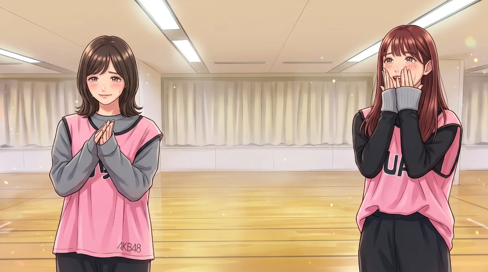

ホーム › 紅白特設
第77回NHK紅白歌合戦 ・ 2026年12月31日(木) 19:20〜
アキバの小さな劇場から始まったグループが、初めて紅白のステージに立ったのは2007年。11年続いた連続出場、6年の空白、そして20周年の帰還。今年は現役メンバーだけで、2年連続の紅白に挑みます。
🌟 現役のAKB48メンバーだけで立つ紅白は、これが初めてと伝えられています。
大みそかまで 47 日
物語は2005年12月8日、秋葉原のドン・キホーテの8階にできた小さな劇場から始まります。「会いに行けるアイドル」として毎日公演を続け、2006年10月に「会いたかった」でメジャーデビュー。
それからわずか1年あまりの2007年の大みそか、AKB48は「アキバ枠」として、中川翔子さん、リア・ディゾンさんと並んで初めて紅白のステージに立ちます。43人で歌った「会いたかった」。ただ、当時はまだ「秋葉原のアイドル」というイメージが強く、世間の注目はこれからというところでした。
翌2008年、紅白の出場はありませんでした。それでもグループは歩みを止めません。1月に初めての地上波の冠番組『AKB1じ59ふん!』が始まり、秋にはレーベルを移って「大声ダイヤモンド」を発売。初週4.8万枚だった売上は、ここから少しずつ伸びていきます。
2009年、初めての選抜総選挙が開かれ、ファンの声がそのまま選抜に届く仕組みが生まれます。10月の「RIVER」でついにオリコン1位。その年の大みそか、AKB48は2年ぶりに紅白へ戻ってきました。ここから11年続く連続出場の始まりです。
2010年の「ヘビーローテーション」は、街のどこにいても聞こえる曲になりました。そして2011年の「Everyday、カチューシャ」で、初週の売上がはじめて100万枚を超えます。この年、東日本大震災が起きると、メンバーは被災地へ通い続け、紅白では「がんばろう日本!」の思いを込めて歌いました。
2012年、グループの顔だった前田敦子さんが卒業します。その年の紅白のタイトルは「第2章」。次の世代へバトンを渡す覚悟の表れでした。2013年の「恋するフォーチュンクッキー」は、全国の会社や自治体、学校が踊った動画が次々と公開されるほど広がり、紅白はお祭りのようなステージになりました。
初週100万枚を超えたシングルは、2011年から2020年までに36作。視聴者の投票でメンバーを選ぶ「夢の紅白選抜」(2016年)、渡辺麻友さんの最後のステージ(2017年)、平成最後の紅白(2018年)、そして世界8都市の姉妹グループと7つの言葉で歌った「世界選抜」(2019年)。11年のあいだ、AKB48の大みそかは毎年新しい景色を見せてくれました。
2020年、新型コロナウイルスの流行で、握手会やコンサート、劇場公演が次々と止まりました。この年に出たシングルは、3月の57th「失恋、ありがとう」の1作だけです。
劇場は2月の終わりから休演し、3月からはお客さんのいない配信公演に。4月からはメンバーが自宅から配信を届ける「OUC48プロジェクト」で、ファンとのつながりを守りました。そして9月、191日ぶりに観客を入れた公演が劇場に戻ってきます。
11月に発表された紅白の出場者に、AKB48の名前はありませんでした。2009年から11年続いた連続出場は、ここで一度止まります。大みそかに紅白のないAKB48は、12年ぶりのことでした。
2021年7月、テレビ東京で新番組『乃木坂に、越されました〜AKB48、色々あってテレ東からの大逆襲!〜』が始まります。初回はグループの歴史をふり返る特別編。そこでメンバーたちは、カメラの前で自分の言葉を口にしました。
メンバーの言葉 ― 2021年7月、番組の初回で
山内瑞葵さんは、初めてセンターを務めた「失恋、ありがとう」をふり返りました。握手会やライブがなくなり、ファンの目の前で披露できる機会が少なかったこと。数字を見て自信をなくしかけたこと。涙を流しながら、「胸を張って『センターをやった』って」あまり言えなかったと打ち明けています。
柏木由紀さんは、最古参として「今までで一番頑張らなきゃいけない」と語り、小栗有以さんは、総選挙やじゃんけん大会のような緊張感も大切だとして、「壊せるものは壊す」と決意を口にしました。
口にした思いを、メンバーはそのまま次の一歩に変えていきます。2021年9月、1年半ぶりのシングル「根も葉もRumor」が発売されます。激しいダンスに正面から挑んだこの曲は、「今のAKB48」を見せる名刺のような1曲になりました。その少し前、最後の1期生・峯岸みなみさんが卒業し、結成時のメンバーは全員が旅立っています。ここからは、新しい世代の物語です。
2022年に17期生、2023年に18期生がお披露目。2023年にはチーム制を休止し、正規メンバーと研究生が一緒に走る体制に変わりました。2024年3月、倉野尾成美さんが4代目の総監督に就任。4月には在籍17年の柏木由紀さんが卒業。グループの中心は、次の世代へと受け継がれていきます。
2024年12月、改修を終えた劇場で、約8年10か月ぶりのオリジナル新公演が始まりました。タイトルは「ここからだ」。19期生、20期生も加わり、劇場から、もう一度大きなステージを目指す日々が続きます。
結成20周年の2025年。4月の65th「まさかのConfession」では、研究生だった八木愛月さんがセンターに選ばれ、AKB48の歴史で初めての「研究生センター」が生まれます。8月の66th「Oh my pumpkin!」では小栗有以さんがセンターに。12月には劇場20周年を迎え、記念公演で「PARTYが始まるよ」を上演。同じ日に、シングルの総売上が6000万枚を超えました。
そして12月31日。AKB48は6年ぶりに紅白へ戻ってきます。前田敦子さん、高橋みなみさんらOGも駆けつけ、「フライングゲット」「ヘビーローテーション」「恋するフォーチュンクッキー」「会いたかった」をつないだ20周年メドレー。先輩たちが築いたステージに、今のメンバーがもう一度立った夜でした。
メンバーの言葉 ― 2025年12月、6年ぶりの紅白を前に
2019年の紅白でセンターに立った小栗有以さんは、6年ぶりの出場を前に「6年前は緊張していたけれど、今は緊張していられない」と語りました。20周年の武道館で先輩たちと同じステージに立ち、その強さを肌で感じたこと。そして「私たちが今のAKB」という強い気持ちで挑みたい、今のAKB48の強さも見せたい、と話しています。
出典: ENCOUNT、J-CASTニュース、スポーツ報知(2025年12月)
2026年、AKB48は勢いを増していきます。2月の67th「名残り桜」で19期生の伊藤百花さんがセンターに。3月にはKLP48(マレーシア)で活動していた行天優莉奈さん、黒須遥香さん、山根涼羽さんの3人が戻ってきました。
8月の68th「好きish」は、初週55.9万枚でオリコン週間1位。シングルの1位獲得数は55作になり、歴代単独1位の記録になりました。9月には22期生がお披露目。10月には、69thでも伊藤百花さんがセンターを務めることが発表されます。3作連続の単独センターは、前田敦子さん以来およそ16年ぶりのことです。
そして11月13日。第77回紅白への出場が発表されました。昨年は12月に入ってからの追加の発表でしたが、今年は最初の出場者発表で名前が呼ばれています。2年連続、14回目。今年は現役メンバー49人の、今のAKB48で大みそかのステージに立ちます。総監督の倉野尾成美さんは「去年を超えるような最高の舞台にしたい」と話しています。2019年の紅白を知るメンバーと、そのあとに加わったメンバー。ふたつの時代が、同じステージでつながります。

2021年に涙ながらに思いを語ったメンバーも、「壊せるものは壊す」と決意したメンバーも、今年の大みそかは、現役だけでつかんだステージに立ちます。あの年を知るファンにとっても、特別な紅白になりそうです。
これまでの14回をふり返ると、2007年は中川翔子さん、リア・ディゾンさんとの「アキバ枠」。2009年からの11年間は、SKE48やNMB48など姉妹グループのメンバーと一緒のステージが多く、2019年は世界の姉妹グループも加わりました。2025年は20周年で、OGの先輩たちが駆けつけています。今年は、今在籍しているAKB48のメンバーだけ。現役メンバーのみでの出場は初めてと報じられています。
連続出場の最後となった2019年の紅白。そのステージに立ったメンバーのうち、今も在籍しているのは10人です。6年前を知る彼女たちが、今年のステージで後輩たちと並びます。
小栗有以倉野尾成美岩立沙穂行天優莉奈下尾みう千葉恵里永野芹佳福岡聖菜山内瑞葵山根涼羽
2019年は選抜16人(48グループ全体)に、AKB48などのメンバーが加わって出演しました。そのうち選抜だったのは小栗有以さん・倉野尾成美さんで、センターは小栗有以さんでした。行天優莉奈さんと山根涼羽さんは、一度KLP48(マレーシア)に移り、2026年にAKB48へ戻ってきた2人です。
「アキバ枠」として、中川翔子さん、リア・ディゾンさんと一緒に初出場。43人がステージに立ちました。メジャーデビューからおよそ1年後のことです。
♪ 会いたかった
2年ぶりの紅白。初めてのオリコン1位になった「RIVER」で戻ってきました。ここから11年連続の出場が始まります。
♪ RIVER
「ヘビーローテーション」「ポニーテールとシュシュ」などのヒットを重ねた年。代表曲をつないだ特別メドレーです。
東日本大震災の年。被災地支援を続けてきたAKB48が、「がんばろう日本!」の思いを込めて歌いました。
♪ フライングゲット
前田敦子さんの卒業後、初めての紅白。「第2章」の名前どおり、新しいAKB48の始まりを見せました。
♪ ギンガムチェック
「恋するフォーチュンクッキー」が日本中で踊られた年。お祭りのようなステージになりました。
1曲をまるごと披露した年です。
♪ 心のプラカード
劇場オープンから10年。歴代の曲をつないだ記念のメドレーです。
視聴者の投票で選ばれた、48グループの「夢の紅白選抜」で歌いました。
今度は曲を視聴者が選ぶ企画。この紅白を最後に渡辺麻友さんがAKB48としての活動を終えました。
平成最後の紅白で、代表曲を披露しました。
世界8都市の姉妹グループと、日本の48グループ6つ、合わせて14組が集まり、7つの言葉で歌いました。センターは小栗有以さん。11年連続、12回目の出場です。
結成20周年の年に、6年ぶりの紅白。前田敦子さん、高橋みなみさんらOGも加わり、ヒット曲をつないで大みそかを盛り上げました。
♪ フライングゲット ♪ ヘビーローテーション
2年連続。現役メンバーだけでの出場です。
2008年と、2020年〜2024年は出場していません。曲名を押すと、名鑑の曲のページ(MVつき)へ移ります。